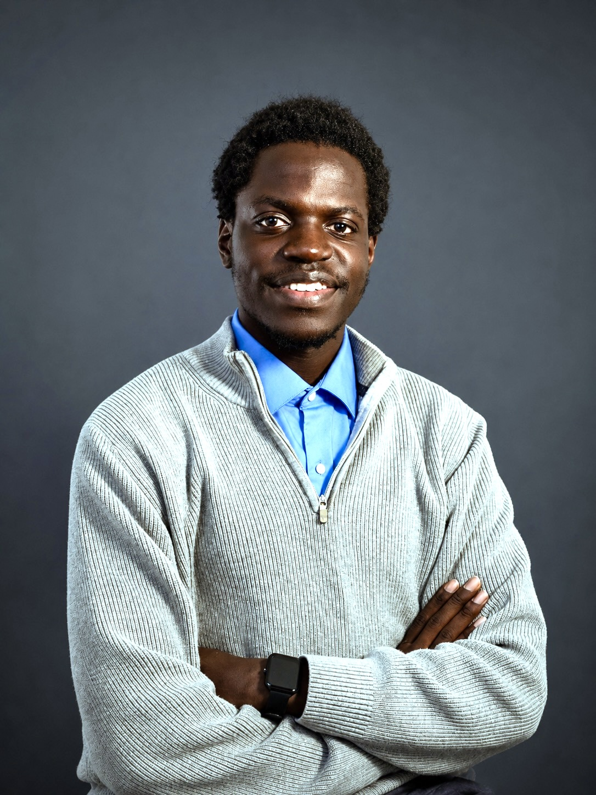

Datalens Platform
Contributed to an interactive visualization platform at the Mind & Data Science Lab enabling researchers to explore complex behavioral and cognitive datasets through intuitive visual interfaces.
JavaScriptD3.jsPythonML
Computational Biologist & Software Engineer
I build data-driven tools at the intersection of biology and software, pipelines and systems that turn complex biological data into insight researchers can act on.
1import pandas as pd2import numpy as np3from skimage import measure4 5def count_cells(image_stack):6 # process time-lapse frames7 results = []8 for frame in image_stack:9 labels = measure.label(frame)10 props = measure.regionprops(labels)11 results.append(len(props))12 return pd.DataFrame(results)

As a Computer Science student minoring in Human Biology at Sattler College, I build the digital infrastructure that moves biomedical research forward.
I focus on bridging the gap between raw biological data and scientific discovery by engineering high-performance analysis pipelines, interactive visualization tools, and intelligent machine learning workflows. My approach combines rigorous software development with a deep respect for human biology, ensuring that complex datasets are not just processed, but made genuinely legible, predictive, and actionable for researchers. By integrating targeted AI models into scalable systems, I am dedicated to creating tools that solve hard problems and seamlessly integrate into the modern lab workflow.
Engineering rigor applied to scientific questions, from raw signal to reproducible insight.
Sattler College · Boston, MA
Represent student interests to college administration and lead campus-wide governance — chairing council meetings, coordinating cross-departmental programs, and driving initiatives that shape the student experience.
Mind & Data Science Lab · Massachusetts General Hospital
Built a cross-study gene expression portal in R/Shiny — enabling researchers to compare Alzheimer's disease vs. control conditions across 15+ independent datasets in a single interactive interface.
Massachusetts General Hospital · Neurology Department
Designed and implemented a database management system for alumni records and supported team onboarding — building infrastructure that keeps research operations running smoothly behind the scenes.
Local Laboratory Partnership · Boston, MA
Built a Python-based cell counting tool for time-lapse microscopy — automating analysis that previously required manual review, with accuracy tuned for real resource constraints in a working lab environment.
Sattler College · Boston, MA
Studying computer science alongside human biology — building the cross-disciplinary foundation to work fluently across software engineering and the life sciences.
Tools built to solve real problems in the lab — from microscopy to data infrastructure.
Contributed to an interactive visualization platform at the Mind & Data Science Lab enabling researchers to explore complex behavioral and cognitive datasets through intuitive visual interfaces.
Python pipeline for automated cell quantification across time-lapse microscopy stacks — labels regions, measures properties, and exports tidy per-frame counts for downstream analysis.
Structured database system for the MGH Neurology Department — turning scattered alumni records into a queryable, reproducible source of truth with automated reporting.
Utilities for parsing and analyzing genomic sequence data — base composition, motif scanning and summary statistics. Built as part of CS50, packaged for reuse across projects.
The most pressing challenges in biomedical research aren't purely biological or purely computational — they live in between. My research builds the infrastructure and tooling that lets scientists ask harder questions of their data.
What does research infrastructure look like when data is organized, versioned, and queryable from the moment it's collected — not as an afterthought?
How do we translate the efficiency, resilience, and self-organization of biological systems into computational architectures and engineering design?
How do we build interfaces expressive enough that a researcher can explore a complex dataset end-to-end — without waiting on a software engineer?
As multi-study datasets in diseases like Alzheimer's grow, what computational approaches can surface cross-cohort signals that single-study analyses overlook?
Open to research opportunities, collaborations and software roles in computational biology and the life sciences.